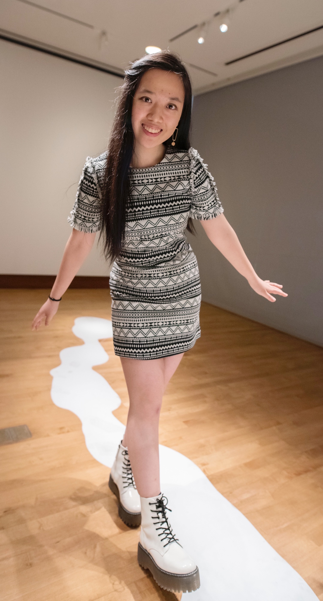

About Me
I am Vera Wei and my pronouns are she/her/hers. I'm a senior at UW-Madison majoring in computer science and psychology, as well as pursuing a certificate in graphic design. Although I was born in North Carolina, I lived in Beijing, China for about six years across elementary and middle school. I'm a little sad that the pandemic has curbed the possibility of face-to-face social interaction, but I've also found ways to keep myself occupied with my hobbies. Some of my hobbies include drawing on my iPad, binge-watching shows, listening to music, and cooking. If you're interested in knowing more information, please refer to my resume.
What you can expect to find on this website
- Shows/dramas that I would highly recommend
- Some of my recent graphic design work
- Foods that I enjoy and want to make
What I look like in real life
I'm disappointed that we haven't had a chance to meet in person due to the pandemic, but here is a recent photo of me in the Chazen Museum!
